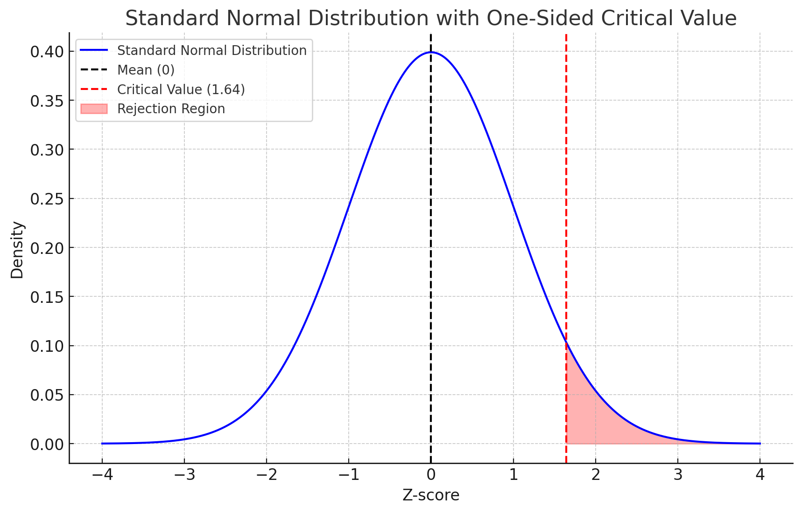
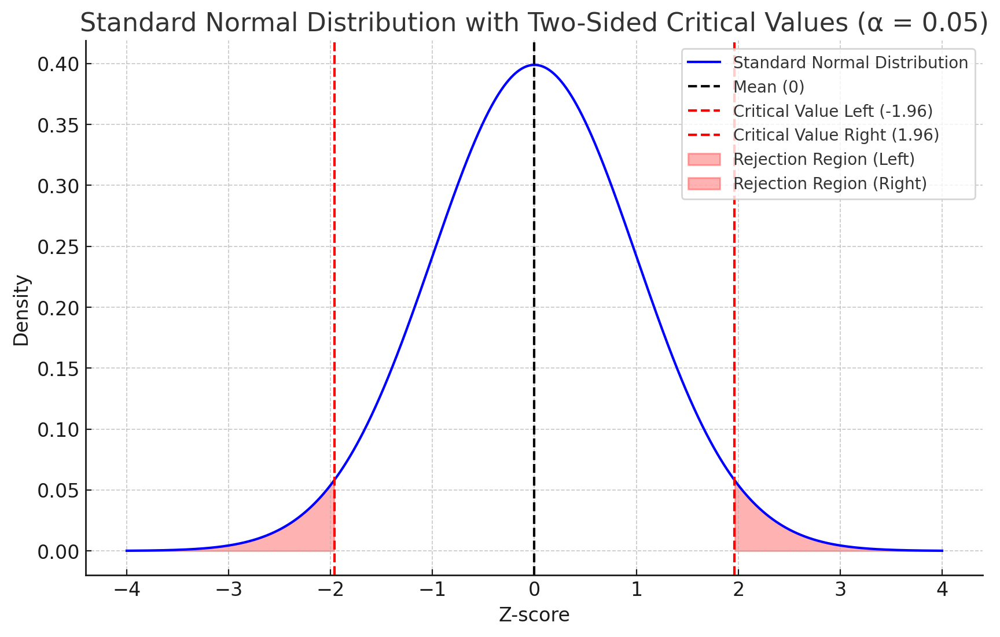

5.29. Z Distribution and Z-tests#
5.29.1. Z-tests#
A z-test is a statistical method used to determine if there is a significant difference between sample data and a known population parameter, or between two sample means when the population variance is known or the sample size is large.
Assumptions of a Z-Test:
Normality: The data should be approximately normally distributed. This is usually satisfied if the sample size is large \(n \geq 30\) due to the Central Limit Theorem.
Known Population Variance: For a z-test, the population standard deviation \(\sigma\) is assumed to be known. If it’s unknown, a t-test is typically used instead.
Independent Observations: The samples should be independent of each other.
5.29.2. Calculate the Test Statistic:#
The test statistic \( z \) is calculated using:
Where:
\( \bar{X} \) is the sample mean.
\( \mu_0 \) is the population mean under the null hypothesis.
\( \sigma \) is the population standard deviation.
\( n \) is the sample size.
5.29.3. Determine the Critical Value and Significance Level#
Choose a significance level \( \alpha \), commonly set at 0.05 or 0.01.
Determine the critical value from the standard normal distribution for a one-tailed or two-tailed test.
5.29.3.1. One-Sided Test#
\( \alpha = 0.05 \):
Right-tailed critical value: \( z_{0.05} \approx 1.645 \)
Left-tailed critical value: \( z_{0.05} \approx -1.645 \)
\( \alpha = 0.01 \):
Right-tailed critical value: \( z_{0.01} \approx 2.33 \)
Left-tailed critical value: \( z_{0.01} \approx -2.33 \)
For a one-sided test with \(\alpha = 0.05\), you find the z-value such that the area in the right tail is 0.05 is \(\approx\) 1.645. 
5.29.3.2. Two-Sided Test#
\( \alpha = 0.05 \):
Critical values for a two-sided test with \( \alpha = 0.05 \) means \( \alpha/2 = 0.025 \) in each tail:\( z_{0.025} \approx \pm 1.96 \)
\( \alpha = 0.01 \):
Critical values for a two-sided test with \( \alpha = 0.01 \) means \( \alpha/2 = 0.005 \) in each tail:\( z_{0.005} \approx \pm 2.58 \)
For a two-sided test with \(\alpha = 0.05\), you find the z-value such that the area in each tail is 0.025 is \(\approx \pm\) 1.96 
5.29.3.3. Summary of Critical Values for Z-Distribution#
Significance Level (\(\alpha\)) |
One-Sided Critical Value (Right Tail) |
One-Sided Critical Value (Left Tail) |
Two-Sided Critical Values |
|---|---|---|---|
\( \alpha = 0.05 \) |
\( 1.645 \) |
\( -1.645 \) |
\( \pm 1.96 \) |
\( \alpha = 0.01 \) |
\( 2.33 \) |
\( -2.33 \) |
\( \pm 2.58 \) |
5.29.4. P-value#
5.29.4.1. Understanding the P-Value#
Instead of comparing the computed z-value to the critical value, it is also possible to directly calculate the probability of that value arising by chance if the \(H_0\) is true.
The p-value is the probability of obtaining a test statistic at least as extreme as the one observed in your sample data, assuming that the null hypothesis is true. It quantifies the evidence against the null hypothesis. A smaller p-value indicates stronger evidence against the null hypothesis.
import numpy as np
import matplotlib.pyplot as plt
from scipy.stats import norm
# Define the standard normal distribution function
def standard_normal_pdf(x):
return (1 / np.sqrt(2 * np.pi)) * np.exp(-0.5 * x**2)
# Generate x values for the plot
x = np.linspace(-4, 4, 1000)
y = standard_normal_pdf(x)
# Given z-value for the two-sided test
z_value = 1.75
# Plot the standard normal distribution
plt.figure(figsize=(10, 6))
plt.plot(x, y, label='Standard Normal Distribution', color='blue')
plt.axvline(x=0, color='black', linestyle='--', label='Mean (0)')
# Right tail area for one-sided test
plt.fill_between(x, 0, y, where=(x >= z_value), color='red', alpha=0.3, label='Right Tail Area (1 - CDF(z))')
# Left tail area for two-sided test
plt.fill_between(x, 0, y, where=(x <= -z_value), color='red', alpha=0.3, label='Left Tail Area (1 - CDF(z))')
# Mark the z-value positions
plt.axvline(x=z_value, color='green', linestyle='--', label=f'Z-Value ({z_value})')
plt.axvline(x=-z_value, color='green', linestyle='--', label=f'-Z-Value (-{z_value})')
# Add labels and legend
plt.title('Two-Sided Test: Visualizing the P-Value Calculation')
plt.xlabel('Z-score')
plt.ylabel('Density')
plt.legend()
plt.show()
5.29.5. Draw a Conclusion#
There are two ways to reject the null hypothesis: using the critical values, or by calculating the p-value directly. They reach equivalent conclusions.
Critical value method
Compare the calculated \( z \)-value to the critical value(s):
If the \( z \)-value falls in the rejection region (beyond the critical value), reject the null hypothesis.
If the \( z \)-value does not fall in the rejection region, fail to reject the null hypothesis.
P-value method
Compare the P-Value to the Significance Level \(\alpha\). The significance level \(\alpha\) is a threshold you set before conducting the test.
If \(\text{p-value} \leq \alpha\): There is enough evidence to reject the null hypothesis.
If \(\text{p-value} > \alpha\): There is insufficient evidence to reject the null hypothesis.
Statistically Significant: When the p-value is less than or equal to \(\alpha\) the result is considered statistically significant or z is in the rejection region, the observed effect is unlikely to have occurred by chance.
5.30. Examples#
5.30.1. Example: Two sided Z-Test#
Suppose you have a sample mean test score of \( \bar{X} = 85 \), with a known population mean of \( \mu_0 = 80 \) and a population standard deviation \( \sigma = 10 \). The sample size \( n = 30 \).
Hypotheses:
\( H_0: \mu = 80 \)
\( H_1: \mu \neq 80 \)
Calculate the z-Statistic: $\( z = \frac{85 - 80}{10 / \sqrt{30}} \approx 2.74 \)$
Critical Value at \( \alpha = 0.05 \) (Two-Tailed):
Critical values are \( \pm 1.96 \).
Decision:
\( 2.74 \) is greater than \( 1.96 \), so we reject the null hypothesis.
Conclusion:
There is a statistically significant difference between the sample mean and the population mean at the 0.05 significance level.